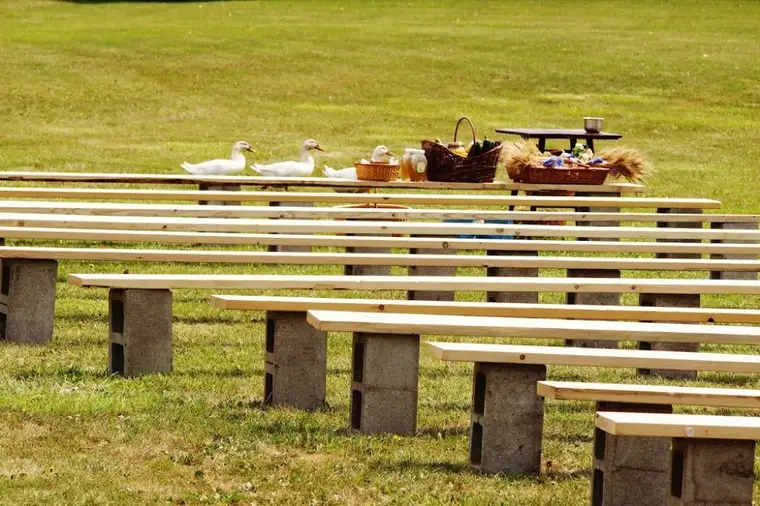

On Sunday, the three youngest kiddos and I set off on a short road trip to Wahpeton, N.D. There, we had the privilege of taking in our first pilgrimage to Our Lady of the Prairies at the Carmelite monastery.
Fr. Anderl, a priest from the area, used to be at our parish, Sts. Anne & Joachim. It was good to see him again.
{kind=link}
In general, it was just great to be back. I spent a week and a half here last June to rest and write, so it was a bit of a homecoming for me, as well as a chance to share that sacred space with my children.
Back then, I was introduced to guinea birds, who’d taken over the grounds and were the featured attraction. This time, the ducks made the biggest showing. Here, they are darting past the baskets of harvest gifts that have been gathered to be presented to the Sisters who live at Carmel and subsist off prayer and the generosity of others.
 |
| [Click to enlarge to get a better glimpse of the quackers] |
{kind=link}
{kind=link}
The ducks seemed to enjoy us, and even hung around for the outdoor Mass as if they were partakers of the feast, too.
{kind=link}
It was a most amazing day weather-wise. I was worried it would be “steaming,” as Nick says. But we started the day with cloud coverage, and I can’t imagine a more perfect day for this event. This butterfly even stayed on this dandelion long enough for me to count its dots.
{kind=link}
The groundskeepers here, Karen and Hank, are some of the nicest people you’ll meet. Last summer, I could look out the window from the guest home, and nine times out of ten, Hank would be buzzing around doing some kind of yard work or other important task. Here, his red motorbike rests in front of the chapel.
{kind=link}
{kind=link}
One of my favorite sights of all to revisit, though, was Our Lady of the Prairies herself. She was just as stunning as ever. I remember sitting at her feet last summer, knocking off half a chapter. It was a very inspiring place to be, and I would love to experience this place as a retreat again someday soon.
{kind=link}
It was a good day; a day of prayer and lots of children and a peacefulness that is hard to come by in the “real” world. It was just the injection I needed to get my week started off right.
Thank you, dear Lord, for your bounty, and the beautiful world you’ve given us!